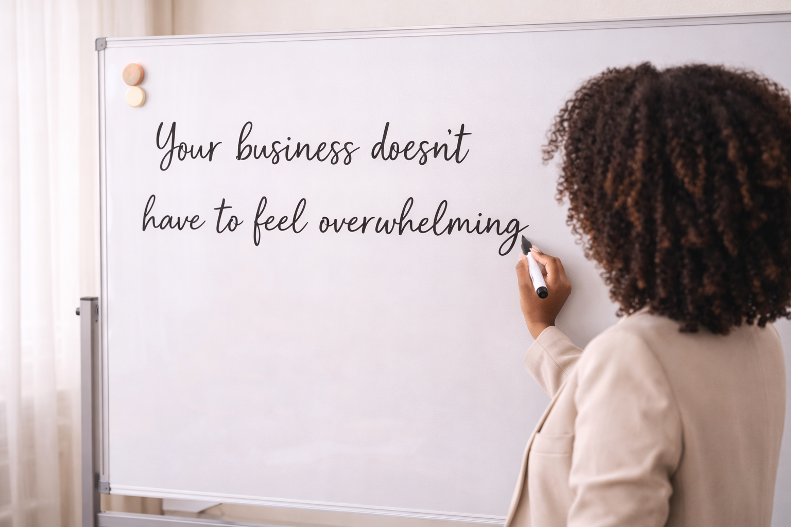

From landing pages to simple workflows and systems, I combine virtual assistance and development, help your business run more smoothly and efficiently.
I build clean, responsive landing pages designed to capture leads and clearly present your business.
I create simple systems to organize your workflow, manage tasks, and keep everything in one place.
I help streamline repetitive tasks with simple automations so your business runs more efficiently.
I help small businesses organize their work, simplify their processes, and build systems that actually support growth. No more scattered tools or missed messages—just clear, simple workflows.
A collection of projects showcasing responsive interfaces, API integration, and practical problem-solving using modern web technologies.
Check more projects on GitHub
I simplify business operations by setting up automations with tools like n8n and Zapier, and I also build custom backend solutions when your business needs something more tailored.

Instead of juggling multiple tools, missing messages, and constantly trying to keep up with everything, your business starts to feel clear and manageable. You know where things are, what needs to be done, and how your day flows. With simple systems in place, communication becomes organized, tasks are easier to track, and nothing slips through the cracks. You spend less time fixing problems and more time focusing on growth, creativity, and actually running your business. It’s not about adding more tools—it’s about creating a structure that supports you, so your business works with you, not against you.
I started out studying Architecture and working in construction, where I learned how to think in structure and detail.
After a serious accident, I had to find a different way to work—and that’s how I got into Virtual Assistance, supporting small businesses remotely.
Along the way, I realized most businesses didn’t just need help with tasks—they needed better systems. That’s what led me into learning software development.
Now, I combine both. I help businesses stay organized, build simple systems, and create tools that make their work feel easier.